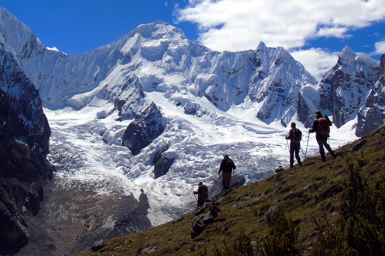
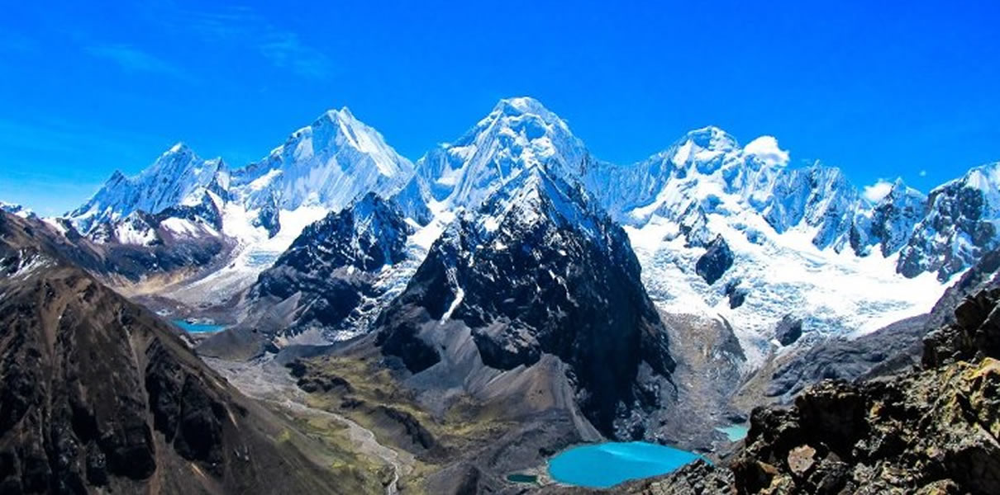

The Cordillera Huayhuash is a mountain range located in the Andes of Peru. It is about 30 km long and 15 km wide. It is located in the boundaries of the Ancash, Lima and Huánuco regions. The Huayhuash range is located in a very remote area where the Andes are at their highest and most rugged. The range is composed of several peaks, the highest of which is Yerupajá, which stands at 6,634 meters above sea level.
 